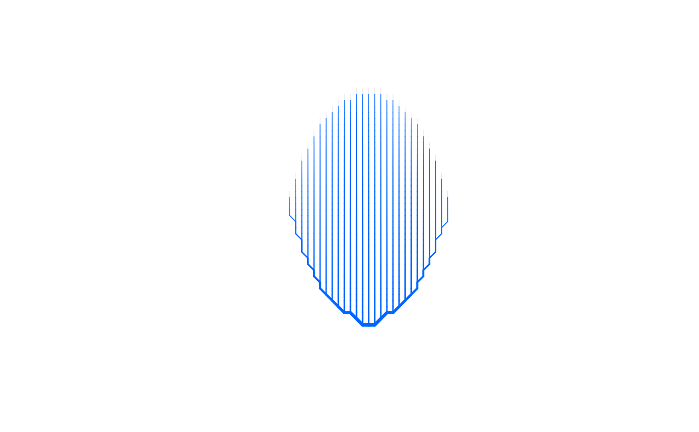
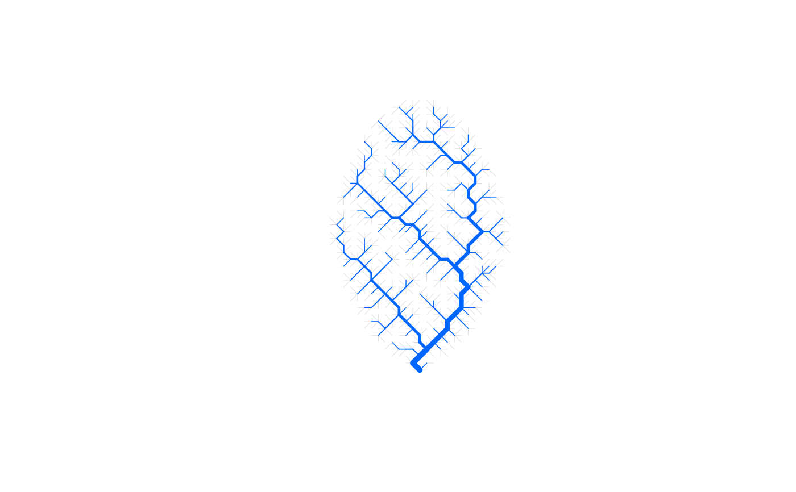

Create an Optimal Channel Network on a general contour
create_general_contour_OCN.RdFunction that performs the OCN search algorithm on a general contour and creates OCN at the flow direction (FD) level.
Usage
create_general_contour_OCN(flowDirStart, expEnergy = 0.5,
cellsize = 1, xllcorner = 0.5 * cellsize, yllcorner = 0.5 *
cellsize, nIter = NULL, nUpdates = 50,
initialNoCoolingPhase = 0, coolingRate = 1,
showIntermediatePlots = FALSE, thrADraw = NULL,
easyDraw = NULL, saveEnergy = FALSE, saveExitFlag = FALSE,
displayUpdates = 1)Arguments
- flowDirStart
Matrix with custom initial flow directions. Cells outside the catchment must have value equal to
NaN. Cells within the catchment have natural numbers between 1 and 8. Key is as follows:1+1 column
2-1 row, +1 column
3-1 row
4-1 row, -1 column
5-1 column
6+1 row, -1 column
7+1 row
8+1 row, +1 column
- expEnergy
Exponent of the functional
sum(A^expEnergy)that is minimized during the OCN search algorithm.- cellsize
Size of a pixel in planar units.
- xllcorner
Longitudinal (column-wise) coordinate of the lower-left pixel of
flowDirStart.- yllcorner
Latitudinal (row-wise) coordinate of the lower-left pixel of
flowDirStart.- nIter
Number of iterations for the OCN search algorithm. Default is 40 times the number of non-
NaNpixels offlowDirStart.- nUpdates
Number of updates given during the OCN search process (only effective if
any(displayUpdates,showIntermediatePlots)=TRUE.).- initialNoCoolingPhase, coolingRate
Parameters of the function used to describe the temperature of the simulated annealing algorithm. See details.
- showIntermediatePlots
If
TRUE, the OCN plot is updatednUpdatestimes during the OCN search process. Note that, for large lattices,showIntermediatePlots = TRUEmight slow down the search process considerably (especially wheneasyDraw = FALSE).- thrADraw
Threshold drainage area value used to display the network (only effective when
showIntermediatePlots = TRUE). Default value is0.002*cellsize^2*nNodes, wherenNodesis the number of non-NaNpixels offlowDirStart.- easyDraw
Logical. If
TRUE, the whole network is displayed (whenshowIntermediatePlots = TRUE), and pixels with drainage area lower thanthrADraware displayed in light gray. IfFALSE, only pixels with drainage area greater or equal tothrADraware displayed. Default isFALSEifdimX*dimY <= 40000, andTRUEotherwise. Note that settingeasyDraw = FALSEfor large networks might slow down the process considerably.- saveEnergy
If
TRUE,energyis saved (see Value for its definition).- saveExitFlag
If
TRUE,exitFlagis saved (see Value for its definition).- displayUpdates
State if updates are printed on the console while the OCN search algorithm runs.
0No update is given.
1An estimate of duration is given (only if
dimX*dimY > 1000, otherwise no update is given).2Progress updates are given. The number of these is controlled by
nUpdates
Value
A river object as in create_OCN, to which the reader is referred for detailed documentation.
However, note that in this case dimX and dimY are equal to the number of columns and rows of flowDirStart, respectively,
while nNodes is the number of non-NaN pixels in flowDirStart. Hence, nNodes is generally lower than
dimX*dimY. The additionally exported vector FD$toDEM identifies the indices of the pixels of the landscape/flow direction matrix
that belong to the catchment (i.e., they are not NaN).
Examples
OCN1 <- create_general_contour_OCN(flowDir, nIter=0) # initial flow directions
OCN2 <- create_general_contour_OCN(flowDir) # perform OCN algorithm
draw_simple_OCN(OCN1)

draw_simple_OCN(OCN2)
